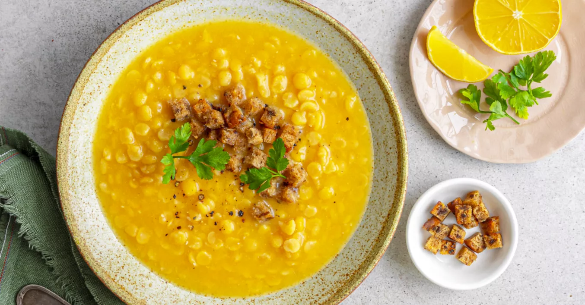

Hustá a výživná hrachová polévka z vývaru z kostí, s česnekem, majoránkou a smaženými krutony. Tradiční recept jak od babičky.
Začneme vařit vývar z kostí v osolené vodě. Průběžně sbíráme pěnu z povrchu.
Přidáme celý pepř, očištěnou kořenovou zeleninu a cibuli. Vaříme do změknutí a poté vývar procedíme.
Předem namočený hrách slijeme a v čerstvé vodě uvaříme doměkka. Poté ho rozmixujeme nebo prolisujeme.
Ze sádla a mouky připravíme jíšku. Postupně do ní za stálého míchání přiléváme vývar a povaříme.
Po cca 30 minutách přidáme prolisovaný hrách, mletý pepř a pokračujeme ve vaření.
Na závěr přidáme rozetřený česnek a majoránku. Dochutíme dle potřeby. Lze přidat i trochu polévkového koření.
Podáváme s osmaženým rohlíkem nebo žemlí a ozdobíme čerstvou petrželkou.